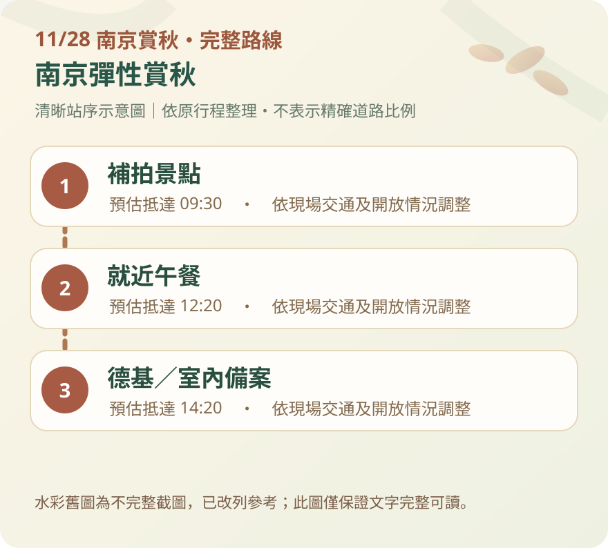

📍 站位：人行道
取景：秋葉＋公館
11/28（六） 彈性賞秋・補拍
🍁 11-28｜南京彈性行程｜清晰完整路線圖｜水彩待重製

查看舊水彩局部素材（原始檔左右已裁缺，非完整路線圖）

📍 當日路線・大字清晰版
以下依本日原行程時間安排重排，並非依模糊圖片辨字。可隨手機放大，水彩圖保留作景觀參考。
- 1補拍景點預估抵達 09:30
- 🍜就近午餐預估抵達 12:20
- 3德基／室內備案預估抵達 14:20
時間為估計，非預約時間；實際接駁及步行依現場路況。路線圖片的地理比例與連線尚未通過驗收。
11/28（六） 彈性賞秋・補拍展開 ▾
⏱️ 慢走1.5倍｜到達機位與拍照時間
到達時間是估計，含慢走及必要轉乘緩衝；不是精確定位或預約時段。
09:00出發／前站 → 約09:30抵達｜補拍景點
🚶 依選定景點計交通；出站慢走20–40分
📸 拍照60–90分
⚠️ 只選一區，不跨區趕點
12:00出發／前站 → 約12:20抵達｜就近午餐
🚶 移動20–30分
📸 用餐60–75分
⚠️ 下午視體力決定是否續拍
14:00出發／前站 → 約14:20抵達｜德基／室內備案
🚶 步行20–30分
📸 參觀60–90分
⚠️ 下雨優先室內
🚇 怎麼去
依天氣補拍玄武湖、頤和路、明孝陵；或新街口
📷 看什麼・怎麼拍
選前幾天光線最好卻未拍到的景點
☔ 雨天／替代
雨天德基藝術博物館、商場
🍜 南京大牌檔 德基廣場店
📸 今日沿路最佳機位（依景點順序）
彈性備案｜天氣補拍機位
優先補拍前幾天因雨錯過的石象路、玄武湖或頤和路，依當天葉況決定。
📷 今日景點照片・最佳拍照點
⚠️ 本圖為「入口→步道→建議站位→主景」的概念相對位置圖，不是依真實園區方位測繪，也不代表入口與機位間的實際路徑、距離或東西南北。高德目前連至景點區域，未核實精確拍攝座標；現場以開放道路與標示為準。